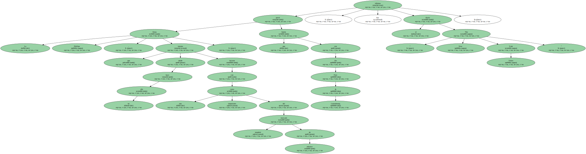
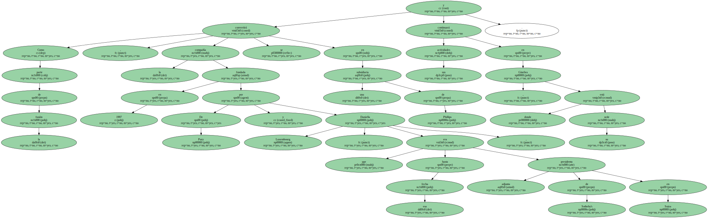
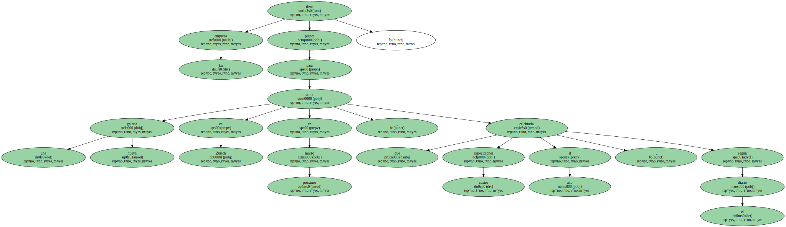
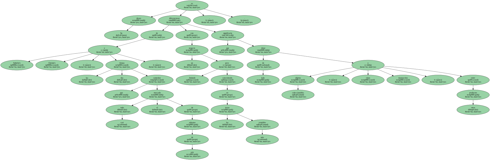
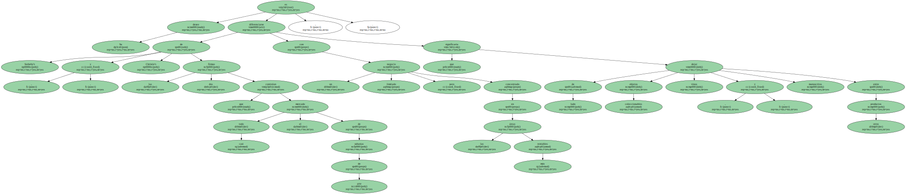

La firma Phillips , que desde hace un año intenta hacerse con una cuota importante del mercado mundial de subastas , prevé una fusión con De Pury & Luxembourg , informa hoy el diario " The New York Times ".
La nueva empresa se llamaría " Phillips De Pury & Luxembourg " y estaría presidida por Simon de Pury , el ex presidente de la firma Sotheby's en Europa , que fue quien dirigió las subastas de arte impresionista , contemporáneo y moderno celebradas por Phillips en noviembre pasado en Nueva York.

La operación se produciría catorce meses después de que Phillips fuera comprada por el grupo francés de productos de lujo Louis Vuitton Moet-Hennessy ( LVMH ).
Como parte de la fusión , la compañía fundada en 1997 por De Pury y Daniella Luxembourg , que era hasta esa fecha presidenta adjunta de Sotheby's en Suiza , se convertirá en una subsidiaria de Phillips y continuará sus actividades en Ginebra , donde está su sede.
La empresa tiene planes para abrir una nueva galería en Zurich en marzo próximo , que celebraría cuatro exposiciones al año , según el diario.
Phillips De Pury & Luxembourg estaría especializada en obras de arte de gran valor y antigüedades.

Su deseo es diferenciarse de Sotheby's y Christie's , las dos firmas que controlan casi todo el mercado de subastas de arte , con un negocio limitado pero concentrado en las áreas más rentables , que significaría dejar de lado objetos coleccionables , vinos y manuscritos , entre otros productos.
De Pury y Luxembourg habían anunciado en junio una alianza comercial con otros dos antiguos expertos de Sotheby's , Lucy Mitchell Innes y David Nash , considerados como dos de los más importantes intermediarios de arte en Estados Unidos , pero la fusión obligaría a poner fin a esa relación.
